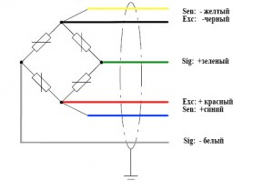

Измерение тензодатчика.
Физические параметры:
Старт измерения.

Параметр
Результат
U+ - U-
--
U+ - Sig+
--
U+ - Sig-
--
U- - Sig+
--
U- - Sig-
--
Sig+ - Sig+
--
см. 0
--
на GND
--
Статус : нет данных
Сохранить измерения.
Динамические параметры:
Старт измерения.
Статус : нет данных